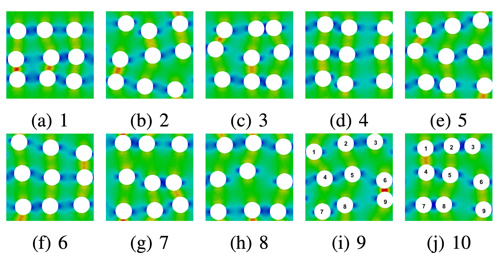
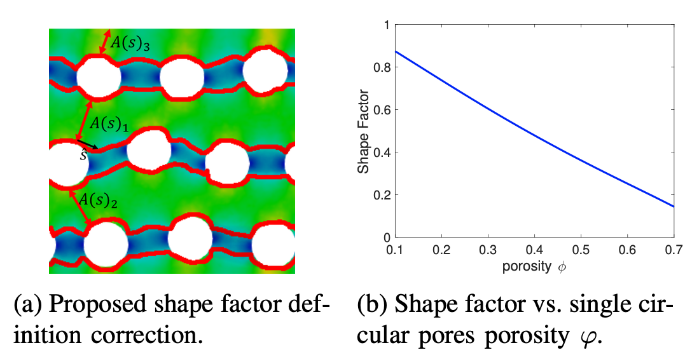

Thermal conductivity of porous media

Research Abstract [Report]
Utilizing a computational framework openBTE, ballistic limit and diffusive limit are studied for two different models - gray and nongray Si. Both ballistic limit and diffusive limit are dependent on the MFP distribution of the material. To study the parameters that might influence the thermal conductivity at diffusive limit for porous media, several geometries are studied and a possible descriptor - shape factor is introduced.
Conclusion
Based on the results of thermal conductivity for differ- ent porous geometry, several conclusions can be made.
- At ballistic limits, the porous geometry will have a suppression effect on the contribution of each MFP band to the total thermal conductivity.
- For a certain material, the characteristic length that will reach diffusive limits is based on the largest MFP that contributes to thermal conductivity of the material.
- Shape factor is descriptive about the thermal conductivity of a certain type of porous geometry, where the A(x) is perpendicular to the direction of the heat flow. Further correction is needed if one wants to use shape factor to fully describe thermal conductivity of a random porous geometry. 